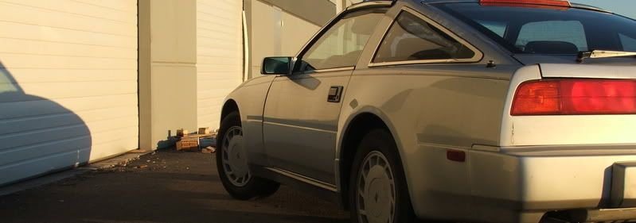

-
when i had my 84, i had two 6.5" memphis carbon-fiber woven seakers wired to a little jensen 300watt amp in the rear, two JL audio 6.5" and 1.5" tweeters (with capacitors) in the front and two memphis audio 10" subs connected to a 1000watt kenwood amp, and that was the most clearest and loudest system i have had. it was just amazing and the louder you played it, the better it sounded and they all fit just perfect in the OE slots with out modifications… except for the box for the two 10's. -
rebornLuZZifer wrote: If you put a spacer for the rear speakers, then would you have a problem fitting the original speaker cover back on.
On yours Nismofreak, that wood block looks like a 3/8 or 1/2. Is the door cover going over that or will you have a cut out within the door panel and cover the block with colored vinyl and speaker grill?
You can make new top covers with perforated aluminum/steel and grill cloth. Not too hard, just cutting to shape, bending, then securing the cloth around the edges. Alternatively, you could do as jbmartin87 did with his.
The baffle was 3/4" MDF, and no the door panel won't fit over it. Even without the door panel, in the stock location when I shut the door the speaker will hit the dash. I am going to make some fiberglass pods that I will bolt and seal into the door, then cut the bottom of the door panel off and make some custom "beauty covers" to make it look decently stock. They won't fit any other way.
RooooATM wrote: wow, definatly not a very thourough speaker job lol. (the guy who did that before you)
but I like the midbass.
Looking back at some earlier pics, the baffle was secured to the door but there were still only 2 screws and a dime holding the components in. Whomever did it could definitely have put more effort into it.
K_Scheeringa wrote: How deep are your 8ââ¬Â midbass?
I have a couple of 6 1/2" midbassââ¬â¢s that I want to use in my doors (when the time comes) but am unsure of the depth available.
What is the max speaker depth for the doors (allowing the windows to work)?
I have not pulled my door panels as of yet and am just curious..
They are 4" deep. The baffle they are on is 3/4" MDF, and the magnet misses the window assembly (with the window all the way down) by about 1.5 millimeters, and no that's not an exaggeration.
If you're wanting the most your door-mounted mids/midbass can do, you will greatly benefit from vibration damping, sealing, and securing the door. You pretty much want to make it a sealed box, cover up the access holes (with removable aluminum/plexi plates if you want) and make sure your mounting baffle is at least 3/4" thick, secured to the door. If you use wood you need to waterproof it, because things will get wet, the wood will rot, and you will be left with a funky ass smell.
As far as rear speakers go, Other than these two 12's, no speakers will be behind the front seat…
'87T -
That will put the sound stage up front where it should be…Nismofreak wrote:
As far as rear speakers go, Other than these two 12's, no speakers will be behind the front seat…
I was wrong, my mid bass's are 6" bumpers (I know not a great name, but sound good) they have a 3 3/8" mounting depth. I'll have to see what I can do to make a small enclosure inside the door, maybe fiberglass or something.. I'm sure these will not like running free air…
Does anybody know if the area around where the door speakers mount is the same between a 2+0 and a 2+2? I have a spare set of doors off of a 2+0 that I could screw around with to make my enclosureââ¬Â¦
My car is a 2+2..Kevin
---------------------------------------
1986 NA 5sp - Bone stock, but in good shape -
[quote]K_Scheeringa wrote:Don't bother with enclosures in the door. You'd be surprised how well they will work in an infinite baffle install (free air would mean sitting on your table with no baffle). 99% of all car-audio mids are made for a car door application. Seal the door well enough and you can get some GREAT bass up front. I'll be running mine down to the 40Hz region, the subs are only for when the car is moving and I want a little more impact. My midbass and tweeters were actually made for home audio use, (read: NOT designed for a car door) but the MB has a stiff enough suspension that I can get away with playing it that low without a true box.Originally posted by Nismofreak
As far as the differences, Ionno. But you'll definately want to deaden the door regardless, it will help with resonance/rattling issues you're gonna encounter.'87T -
I think I like Jbmartins idea for rear speakers, I think that's what I'm gonna go with.
Looks clean still and you get to show off your speakers a little bit I suppose.
also just because I can't fit any speaker in the stock spot… :-?Mmm, that feels good, I mean.. tastes good, I mean.. what? -
i did this with my 3 way components and damn did it sound good. i had to modify the mount for the 6.5. i just cut slits into the mount where the speaker was hitting. i never got around to figuring out where and how to install the mid up front but the 6.5 fit just fine in the door.
-
I dont see how the magnet on that isn't hitting your wheel well. whatever haha
I see you like your tweeters, that's always a good thing.Mmm, that feels good, I mean.. tastes good, I mean.. what? -
oh it's touching but the factory covers fit on there just fine. -
My Jenson 6.5" don't fit in the rear either, i will probably just take them back and get some different ones.1uz Swapped, lowered, flaked out '86 z31
'72 Datsun 510 4dr, ka24de-T, slammed resto mod
'84 z31 turbo, coils, wheels a.k.a the gfs weekend car
'86 na2t parts for now a.k.a eventually will get running with a/c daily
'83 280zx project backburner a.k.a ls turbo drag car one day
Custom vg30et tube chassis drift exocet project -
you should, jensens are horrible speakers.
"Beer is proof that god wants us to be happy" - Benjamin Franklin -
lol @ jensens. my speakers have a huge magnet and they fit in there. i will get some pics of the brackets i modded when i go over to my new place. -
yah do that, I can't even fit a 6x9 magnet in there. maybe the depth is different between some of the models.Mmm, that feels good, I mean.. tastes good, I mean.. what? -
I had two sets of MB Quart Q series in my Z (one set in the front, one in the rear.) Ended up taking out the set in the rear because they were superfluous.
My suggestion to you: Forget the rears. Except to add a small amount of rear fill they will muddy up your sound staging. If you can't live without them, just get the cheapest set you can find and adjust the gain on your amp so low that you can barely hear them.
If you haven't gotten any speakers yet, spend the extra money you now have by not getting rears on a better set of front speakers. Better sound, better separation, better equipment, just better. -
cant find them they are packed up. but i just cut and bent down the areas that prevented the speaker from going in. i have fairly deep speakers you shouldn't have any problems. 6x9's are not going to work any way with the stock mounts. heres a shitty pic of what i did.
-
What did you cut the metal with? Just wondering how accurate you are with an angle grinder lololol." I spend another hour trying to rip the bolt out of the subframe, pausing every five minutes to scream and contemplate how I get myself into these situations. Two cars over, a guy urinates. I watch the steam waft off of the fresh puddle in the gravel. It merges with the blowing snow and is cut by the aerodynamic wedge of a nearby Fiero. Beautiful. Another pry and the carrier finally falls to earth. I walk out of there $80 lighter, which makes me more mad." - Brian Kolar

Copyright © 2006–. All rights reserved. Privacy Policy